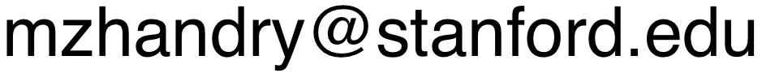
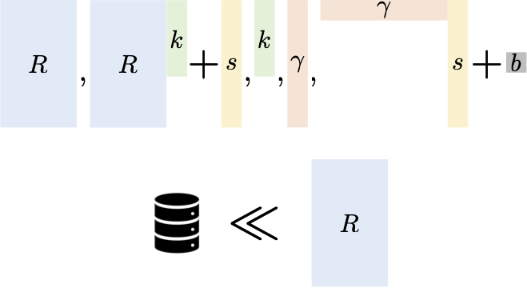

|
I am a Senior Scientist at NTT Research in the Cryptography & Information Security Lab.
My am broadly interested in all aspects of
computer science theory, with an emphasis on cryptography and quantum computing. Previously, I was an Assistant Professor at
Princeton University, before going on leave to help
launch NTT's new industry research lab in California and ultimately making the move permanent. I completed a postdoc at MIT, my PhD at Stanford University and my bachelor's degree with Highest Honors at UC Berkeley. I am a recipient of the NSF CAREER Award and the Sloan Fellowship, as well as three Best Paper Awards, given every year to the top paper at each of the flagship cryptography conferences. Email:  |
 |
Research Interests
 Our construction of a search problem that is easy for quantum computers, but hard for
classical computers. Unlike other known demonstrations of "Quantum Advantage" that
require tools from number theory and public key cryptography, our search problem can
be instantiated from any cryptographic hash function whose outputs are sufficiently
"random looking." See Our construction of a search problem that is easy for quantum computers, but hard for
classical computers. Unlike other known demonstrations of "Quantum Advantage" that
require tools from number theory and public key cryptography, our search problem can
be instantiated from any cryptographic hash function whose outputs are sufficiently
"random looking." See
 . .
| Quantum Quantum computers — harnessing the strange features of quantum mechanics such as superpositions, entanglement, etc. — promise to revolutionize computer science. The enhanced computational power of such computers pose major threats to security, and new cryptosystems must be developed and analyzed to resist such threats. On the otherhand, quantum computers offer solutions to never-before-possible tasks, such as certifying random strings, validating the deletion of data, programs that cannot be copied, and more. |
Our construction for obfuscating conjuctions. Assuming the conjunction is sampled from
a sufficiently random distribution, we prove security under the LPN assumption. Along
the way, we prove a partial converse to a theorem of Arora and Ge, showing that LPN
remains hard under structured noise when the number of samples is small. See
.
| Obfuscation Can you hide secrets in software? For decades, attempts at obfuscation applied code transformations such as inserting dummy operations or re-naming variables. These transformations make extracting secrets harder, but not impossible. A new, stronger form of obfuscation has emerged, however, that applies mathematical transformations to software, and has the potential to make extracting secrets effectively impossible. Obfuscation has numerous connections to cryptography and computer science generally. |
 A diagram of the Augmented Random Oracle Model (AROM). The AROM is designed to
capture known uninstantiability results that apply to idealized models, in
particular the random oracle model (ROM). Such uninstantiability results take the form
of protocols that are secure in the ROM but insecure when the random oracle is
replaced with any concrete function. The AROM aguments the random oracle in a way so
as to make such protocols insecure even in the idealized model. As such, a proof of
security in the AROM indicates resilience to known uninstantiabilities. See
. A diagram of the Augmented Random Oracle Model (AROM). The AROM is designed to
capture known uninstantiability results that apply to idealized models, in
particular the random oracle model (ROM). Such uninstantiability results take the form
of protocols that are secure in the ROM but insecure when the random oracle is
replaced with any concrete function. The AROM aguments the random oracle in a way so
as to make such protocols insecure even in the idealized model. As such, a proof of
security in the AROM indicates resilience to known uninstantiabilities. See
.
| Idealized Models Many of the most practical cryptosystems lack a full security proof in the standard model. Nevertheless, we can gain confidence in their security by heuristically treating one or more of the building blocks as an "ideal" object implemented as an oracle. Prominent examples include random oracles, ideal ciphers, generic groups, etc. Proofs in idealized models are often very different from standard crypto proofs, requiring both reductions and query complexity arguments. |
 The general structure of an Affine Determinant Program (ADP): the program is specified
by a collection of matrices. To evaluate the program on input x, first compute the
linear combination of matrices, where the coefficients are the inut bits. Then take
the determinant. We give candudate obfuscators for such programs, which can be lifted
to obfuscators for general programs using known techniques. We use this obfuscator to
construct public key encryption with very fast key generation. See
. The general structure of an Affine Determinant Program (ADP): the program is specified
by a collection of matrices. To evaluate the program on input x, first compute the
linear combination of matrices, where the coefficients are the inut bits. Then take
the determinant. We give candudate obfuscators for such programs, which can be lifted
to obfuscators for general programs using known techniques. We use this obfuscator to
construct public key encryption with very fast key generation. See
.
| Crypto Math Intractible mathematical problems are the heart of modern cryptography. Unfortunately, until someone proves that P≠NP, the intractability of such problems cannot be proven unconditionally and can only be conjectured. Then how do we discover novel mathematical structures, figure out how to use them, and gain confidence in their security? Through extensive study, development of new applications, attacks, and mitigations. |
 The leakage profile in our construction of practical order revealing encryption (ORE).
Like all known practical ORE schemes, our scheme leakes more than just the order of
plaintexts. Unlike other leakage profiles, however, this leakage is invariant under
multiplying all plaintexts by 2. With some additional processing, this allows us to
construct parameter-hiding ORE, which hides the scale and shift of the
underlying plaintext distribution. Parameter hiding is the only known semantically
meaningful privacy notion achieved by practical ORE schemes. See
. The leakage profile in our construction of practical order revealing encryption (ORE).
Like all known practical ORE schemes, our scheme leakes more than just the order of
plaintexts. Unlike other leakage profiles, however, this leakage is invariant under
multiplying all plaintexts by 2. With some additional processing, this allows us to
construct parameter-hiding ORE, which hides the scale and shift of the
underlying plaintext distribution. Parameter hiding is the only known semantically
meaningful privacy notion achieved by practical ORE schemes. See
.
| Property Preserving Encryption Property Preserving Encryption (PPE) deliberately preserves certain relations on the plaintext data (e.g. equalities in the case of deterministic encryption, or order in the case of order revealing encryption). In addition to applications such as encrypted databases, PPE also has other interesting connections, such as security under bad randomness and differential privacy. The question is then: how to reveal such information without revealing other sensitive data, and what security, if any, remains. |
 A representation of our traitor tracing algorithm built on top of threshold broadcast
encryption. This tracing algorithm plays a crucial role in constructing the first
traitor tracing scheme from pairings with O(N1/3) sized parameters,
overcoming a quadratic barrier that had stood for almost 15 years. See
. A representation of our traitor tracing algorithm built on top of threshold broadcast
encryption. This tracing algorithm plays a crucial role in constructing the first
traitor tracing scheme from pairings with O(N1/3) sized parameters,
overcoming a quadratic barrier that had stood for almost 15 years. See
.
| Traitor Tracing Traitor tracing systems seek to deter piracy by enabling content distributors to identify the origin of pirate decryption boxes. The "usual" goal in traitor tracing is to achieve the shortest ciphertexts, secret keys, and public keys possible. But there is also a rich set of questions beyond parameter sizes: how to embed arbitrary information into a secret key? How to keep honest users' information private, while exposing traitors'? What happens when the decoder uses a quantum computer? |
The smallest tournament graph in which every pair of nodes has at least one common
ancestor. Erdős and Sós consider the general problem of constructing tournament graphs
where every n nodes have a common ancestor, giving an exponential lower bound for such
graphs. This lower bound plays a crucial role in our impossibility results for
constructing order-revealing encryption. See
.
| Black-Box Impossibilities Can public key encryption be built from one-way functions? Is it just a matter of time before the community solves this problem, or are this problem and others like it actually impossible? This question is addressed by black box impossibilities, which show, relative to certain techniques, that such a result is indeed impossible. Black box impossibilities help guide protocol design by showing which techniques won't work. The proofs of such impossibilities can draw on interesting mathematical tools from linear algebra, graph theory, are more. |
Our commitment to a bit b. By streaming the bits of our commitment in
the correct order, the commitment can be computed and read in very low space, and
remains secure as long as the adversary's storage is somewhat smaller than the total
length of the commitment. Prior commitments in the bounded storage model were rather
complicated and required 5 messages. In contrast, our protocol is extremely simple and
only requires a single message. See
.
| Bounded Storage Model Cryptography typically models adversaries as time-bounded, but what about adversaries that are space-bounded? The space-bounded model allows for unconditional and everlasting protocols, sometimes far simpler than their time-bounded counterparts. If we bound time and space, we can also achieve never-before-possible functionalities, such as ciphertexts that effectively disappear after transmission. |
Advising
Postdoc → Scientist at NTT Research
→ Asst Prof at Boston University
PhD
→ Hudson River Trading
→ Postdoc at UC Berkeley
→ Faculty Fellow at NYU
Masters
→ PhD at UC Berkeley
→ PhD at UC Berkeley
Intern
Program Committees
EUROCRYPT 2024CFail 2023
TCC 2023
FOCS 2023
PKC 2023
QCW 2022
CFail 2022
TCC 2022
EUROCRYPT 2022
PKC 2022
TCC 2021
ITCS 2021
ASIACRYPT 2020
ITC 2020
ASIACRYPT 2019
CRYPTO 2018
TCC 2017
EUROCRYPT 2017
ICITS 2016
ICITS 2015